From the hole below the dolmen came the sound of scratching again and the strong scent of herbs and roots. After a minute,
they saw grey-streaked hair, followed by a noble face with an impressively arched nose, which did not belong to a ghoul, but
a thin, middle-aged man.
The man scrambled out of the hole, brushed his black coat tied at the waist with an apron, and straightened his canvas bag, causing another
wave of herbal scents.
"Gentlemen, I propose that you put away your weapons," he said in a calm voice, his eyes searching the surroundings.
"You will not need them. As you can see, I do not wear a sword. I never do. I also do not carry anything of worth in my pouch. My name is Emiel Regis. I come from Dillingen. I am a surgeon."
